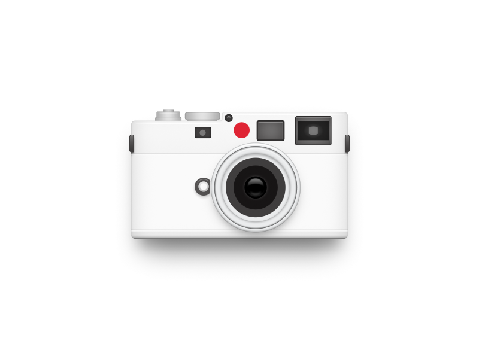

<html lang="en">
<head>
    <meta charset="UTF-8">
    <meta name="viewport" content="width=device-width, initial-scale=1.0">
    <meta http-equiv="X-UA-Compatible" content="ie=edge">
    <title>svg </title>
    <link rel="stylesheet" href="./css/reset.css">

    <style>
        .container{
            position: relative;
            margin-top:10rem;
        }
        .svg-wrapper{
            position: absolute;
            width: 100%;
            height: auto;
            top: 0;
            left: 0;
            /* transform: translateX(-50%); */
            display: flex;
            align-items: center;
            justify-content: center;
        }
        #dash-array {
            stroke: #1B8798;
            animation: animation 2s 1 ease-in-out forwards;
        }
 
        @keyframes animation {
            0%{
                    stroke-dasharray: 1,500;
            }
            100%{
                    stroke-dasharray: 500,1;
            }
        }

        
 
        @keyframes stroke {
            0%{
                    stroke-dasharray: 0,180;
                    fill-opacity: 0;
            }
            100%{
                    stroke-dasharray: 180,0;
                    fill-opacity: 1;
            }
        }
        
 
        @keyframes scale {
            0%{
                opacity:0;
                transform: scale(1);
            }
            20%{
                opacity:.85;
                transform: scale(1.01);
            }
            55%{
                opacity:.8;
                transform: scale(.98);
            }
            76%{
                opacity:.85;
                transform: scale(.1.01);
            }
            100%{
                opacity:1;
                transform: scale(1);
            }
        }
        
        
        path, ellipse, rect, line , circle:not(.lence){
            /* stroke: #1B8798; */
            animation: stroke 1.4s 1 ease-in-out both;
        }
        .lence{
            /* stroke: #1B8798; */
            opacity: 0;
            transform-origin: center center;
            animation: scale 1.8s 1 ease-in-out both;
            animation-delay: 1.4s;
        }
        circle:not(.lence){
            animation-delay: .2s;
        }
        path{
            animation-delay: .5s;
            animation-duration: 1.1s;
        }
        rect{
            animation-delay: .8s;
        }
        ellipse{
            animation-delay: 1.6s;
            animation-duration: .8s;
        }
        line{
            animation-delay: 1.5s;
        }
    </style>
</head>
<body>

    <div class="container">
        <!--  -->

        <div class="svg-wrapper">
            <!--  -->

            <svg
    version="1.1"
    xmlns="http://www.w3.org/2000/svg"
    baseProfile="full"
    width="60rem"
    height="40rem"
    viewBox="0 0 300 200"
>

    <defs>
        <linearGradient id="lg1"  x1="0" y1="0" x2="0" y2="1">
            <stop class="stop1" offset="0%" stop-color="#6f6f6f" stop-opacity="1"></stop>
            <stop class="stop3" offset="100%" stop-color="#2e2e2e" stop-opacity="1"></stop>
        </linearGradient>

        
        <linearGradient id="lg2"  x1="0" y1="0" x2="1" y2="0">
            <stop class="stop1" offset="0%" stop-color="#b9b9b9" stop-opacity="1"></stop>
            <stop class="stop3" offset="50%" stop-color="#ebebeb" stop-opacity="1"></stop>
            <stop class="stop1" offset="100%" stop-color="#b9b9b9" stop-opacity="1"></stop>
        </linearGradient>

        
        
        <linearGradient id="lg3"  x1="0" y1="0" x2="1" y2="0">
            <stop class="stop1" offset="0%" stop-color="#b2b2b2" stop-opacity="1"></stop>
            <stop class="stop3" offset="50%" stop-color="#e2e2e2" stop-opacity="1"></stop>
            <stop class="stop1" offset="100%" stop-color="#b2b2b2" stop-opacity="1"></stop>
        </linearGradient>

        <!-- 主轮廓阴影 -->
        <linearGradient id="lg4"  x1="0" y1="0" x2="1" y2="0">
            <stop class="stop1" offset="0%" stop-color="#ededed" stop-opacity="1"></stop>
            <stop class="stop2" offset="6%" stop-color="#fafafa" stop-opacity="1"></stop>
            <stop class="stop2" offset="42%" stop-color="#fdfdfd" stop-opacity="1"></stop>
            <stop class="stop3" offset="50%" stop-color="#fff" stop-opacity="1"></stop>
            <stop class="stop4" offset="58%" stop-color="#fdfdfd" stop-opacity="1"></stop>
            <stop class="stop4" offset="94%" stop-color="#fafafa" stop-opacity="1"></stop>
            <stop class="stop5" offset="100%" stop-color="#ededed" stop-opacity="1"></stop>
        </linearGradient>

        <linearGradient id="lg5"  x1="0" y1="0" x2="1" y2="0">
            <stop class="stop1" offset="0%" stop-color="#e5e5e5" stop-opacity="1"></stop>
            <stop class="stop2" offset="6%" stop-color="#f1f1f1" stop-opacity="1"></stop>
            <!-- <stop class="stop3" offset="50%" stop-color="#fafafa" stop-opacity="1"></stop> -->
            <stop class="stop4" offset="94%" stop-color="#f1f1f1" stop-opacity="1"></stop>
            <stop class="stop5" offset="100%" stop-color="#e5e5e5" stop-opacity="1"></stop>
        </linearGradient>
    </defs>

    <!-- <rect fill="transparent" width="100%" height="100%" stroke="#DCDCDC" rx="4" ry="4" stroke-width="1" /> -->
    

    <!-- 调焦按钮 -->
    <path
        d="
            M 120 70
            h 16
            l 1 1
            v 3
            l -1 1
            h -18
            l -1 -1
            v -3
            l 1 -1
            z  
        "
        fill="url(#lg2)"
        stroke="#a7a7a7"
    />
    <line x1="120" y1="75.3" x2="134" y2="75.3" stroke="#a7a7a7"/>
    <line x1="120" y1="73" x2="136" y2="73" stroke="url(#lg3)"/>

    <!-- 快门按钮 -->
    <path
        d="
            M 98 73.5
            h 15
            l .1 .1
            v 1.5
            l -.1 .1
            h -16
            l -.1 -.1
            v -1.5
            l .1 -.1
            z  
        "
        fill="url(#lg2)"
        stroke="#a7a7a7"
        stroke-width=".3"
    />
    <line x1="98" y1="76" x2="113" y2="76" stroke="url(#lg3)" stroke-width=".3"/>

    <path
        d="
            M 98.5 70
            h 13
            l .5 .5
            v 3
            h -14
            v -3
            l .5 -.5
            z  
        "
        fill="url(#lg2)"
        stroke="#a7a7a7"
        stroke-width=".3"
    />
    <line x1="99" y1="72" x2="113" y2="72" stroke="url(#lg3)"  stroke-width=".3"/>

    <path
        d="
            M 102.5 68.5
            h 5
            l .5 .5
            v 1
            h -6
            v -1
            l .5 -.5
            z  
        "
        fill="url(#lg2)"
        stroke="#a7a7a7"
        stroke-width=".3"
    />
    <!-- <line x1="99" y1="76" x2="113" y2="76" stroke="url(#lg3)"/> -->

    <!-- 机体轮廓 -->
    <path 
        d="
            M 86 76
            h 50
            l 2 -2
            v -2
            l 2 -2
            h 76
            l 2 2
            v 76
            l -2 2
            h -131
            l -2 -2
            v -69
            Z
        "
        fill="url(#lg4)"
        stroke="#d9d9d9"
        stroke-width=".3"
    />
    <path 
        d="
            M 86 76
            h 50
            l 2 -2
            v -2
            l 2 -2
            h 76
            l 2 2
            v 23.5
            h -135
            v -17.5
            Z
        "
        fill="url(#lg5)"
        stroke="#d9d9d9"
        stroke-width=".3"
    />

    <!-- 元器件1 -->
    <rect
        x="122" y="80"
        width="10" height="7"
        rx="1" ry="1"
        fill="#403e3e"
        stroke="#333"
        stroke-width=".5"
    />
    
    <circle cx="127" cy="83.5" r="2" fill="#787878" />

    <!-- 元器件2 -->
    
    <circle cx="151.5" cy="81.5" r="5" fill="#df2434" />

    <rect 
        x="161" y="76.5"
        width="16.5" height="11"
        rx="1" ry="1"
        fill="#6d6b6b"
        stroke="#333"
        stroke-width="1.2"
    />

    <!-- 元器件3 -->
    <circle cx="143.8" cy="74" r=2.5 fill="#555"  stroke="transparent" stroke-width=".5"/>
    <circle cx="143.8" cy="74" r=1.6 fill="#999" stroke="transparent" />
    <ellipse cx="143.8" cy="74.4" rx=2 ry="1.1" fill="#555" stroke="transparent" />


    <!-- 元器件4 -->
    <rect
        x="186" y="73"
        width="22" height="18"
        rx="1.6" ry="1.6"
        stroke="#3d3d3d" stroke-width=".5" fill="#5c5c5c" 
    />
    <rect x="187.2" y="76" width="19.5" height="11.5" rx="1" ry="1" stroke="transparent" fill="#2d2d2d" />
    <ellipse cx="197" cy="82" rx="6" ry="4" fill="#787878" fill-opacity=".1" stroke="transparent" />
    <rect x="194" y="79.5" width="6" height="5" rx="2.7" fill="#8c8c8c"/>


    <!-- 机身分割线 上 -->
    <line
        x1="83" y1="96" x2="218" y2="96"
        stroke="#d9d9d9"
        stroke-width=".5"
        stroke-linecap="butt"
    />
    <line
        x1="83.5" y1="96.5" x2="217.5" y2="96.5"
        stroke="#fff" stroke-width=".8" stroke-linecap="butt"
    />
    
    
    <!-- 机身分割线 下 -->
    <line
        x1="83" y1="144" x2="218" y2="144"
        stroke="#d9d9d9"
        stroke-width=".5"
        stroke-linecap="butt"
    />
    <line
        x1="83.5" y1="144.5" x2="217.5" y2="144.5"
        stroke="#fff" stroke-width=".8" stroke-linecap="butt"
    />


    <!-- 镜头左侧装饰 -->
    <circle
        cx="128.5" cy="117.5" r="5" 
        fill="#545252"
        stroke="transparent"
    />

    
    <circle
        cx="128" cy="116.5" r="3" 
        fill="#ccc"
        stroke="transparent"
    />

    
    <circle
        cx="128.5" cy="117.5" r="3.7" 
        fill="#545252"
        stroke="transparent"
    />

    
    <circle
        cx="128.5" cy="117.5" r="2" 
        fill="#fefefe"
        stroke="#bbb"
        stroke-width="1"
    />

    <!-- 镜头 -->
    <circle
        cx="160.5" cy="117.5" r="28" 
        fill="#fff"
        stroke="#c1c2c3"
        stroke-width=".3"
    />
    <circle
        cx="160.5" cy="117.5" r="26" 
        fill="transparent"
        stroke="#797a7b"
        stroke-width=".3"
    />
    
    <circle
        cx="160.5" cy="117.5" r="21.8" 
        fill="transparent"
        stroke="#c1c2c3"
        stroke-widht="1"
        class="lence"
    />

    
    <circle
        cx="160.5" cy="117.5" r="19" 
        fill="#403e3e"
        stroke="transparent"
        stroke-width=".3"
        class="lence"
    />

    <circle
        cx="160.5" cy="117.5" r="13" 
        fill="#171515"
        stroke="transparent"
        stroke-width=".3"
        class="lence"
    />

    <circle
        cx="160.5" cy="117.5" r="7" 
        fill="#000000"
        stroke="#272526"
        stroke-width=".3"
        class="lence"
    />

    <circle
        cx="160.5" cy="117.5" r="5" 
        fill="url(#lg1)"
        stroke="transparent"
        stroke-width=".3"
        class="lence"
    />

    
    <ellipse
        cx="160.5" cy="118.5" rx="6" ry="3" 
        fill="#000000"
        stroke="transparent"
    />
    
    <!-- 两侧装饰 -->
    <path
        d="
            M 81.5 85
            l 1 -1
            h 1.5
            v 10
            h -1.5
            l -1 -1
            v -8
        "
        stroke="#403e3e"
        stroke-width=".3"
        fill="url(#lg1)"
    />

    
    <path
        d="
            M 219.8 85
            l -1 -1
            h -1.5
            v 10
            h 1.5
            l 1 -1
            v -8
            Z
        "
        stroke="#403e3e"
        stroke-width=".3"
        fill="url(#lg1)"
    />


    <!-- 嵌入图片 -->
    <!-- <image x="0" y="0" width="100%" y="100%" xlink:href="./img/m8.png" /> -->
</svg>
        </div>
    </div>


</body>
</html>